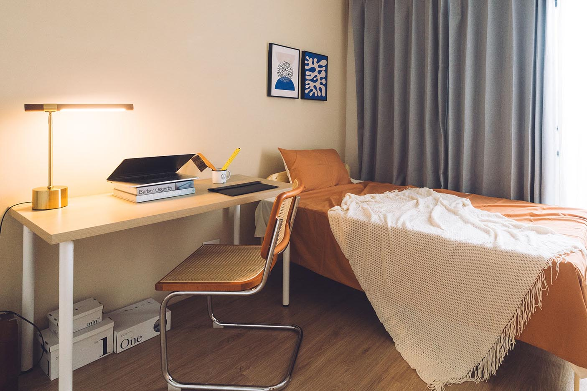
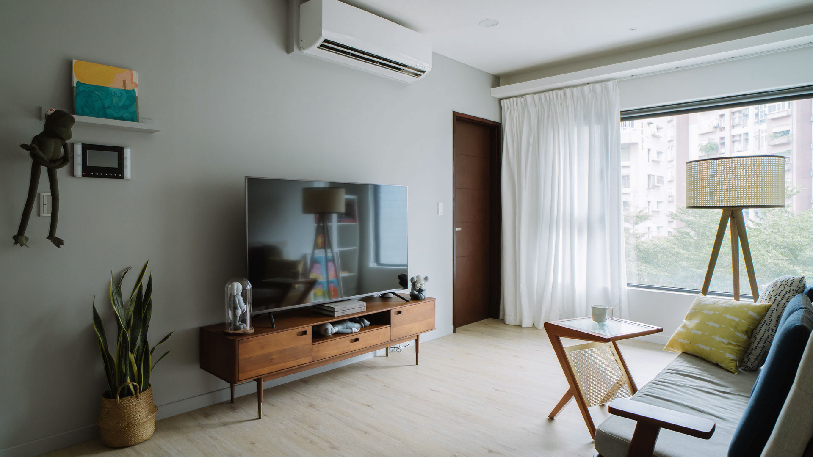

房客申報租金扣除額或申請補貼後，系統自動比對，屋主資料即進入國稅局資料庫，全程不需通知房東或取得房東授權。此外，為了保障租賃雙方的權益，契約中若有「不可報稅」或「不得遷入戶籍」等條款，在現行法規下也是不具法律效力的。
來源：內政部 ↗一旦查獲，補稅加罰鍰為應繳稅額的 1.5 至 4 倍，最多往回追溯 5 年。以月租 3 萬元、5 年未申報為例，最壞情境合計超過 60 萬元。
來源：樂屋網 ↗2024 年 7 月起，台北市非自住房屋稅率 3.2% 起跳、最高 4.8%，改為全國歸戶計算。即使房屋完全空置、無租金收入，稅單照樣寄來。
來源：好房網 ↗| 比較項目 | 包租代管（我們） | 一般仲介 |
|---|---|---|
| 尋找房客 | 持續負責招租 | 一次性 |
| 老屋翻新 | 免費翻新 | 不提供 |
| 管理房客 | 全程管理 | 不負責 |
| 修繕保養 | 設計師合作團隊 | 不負責 |
| 穩定收租 | 每月保證入帳 | 空租自負 |
| 自己出租時 | 交給包租代管 | |
|---|---|---|
| 稅務 | 擔心哪天被查稅 | 合法申報，透明不擔心 |
| 維修 | 半夜接電話，親自跑去修 | 設計師合作團隊快速處理 |
| 房客 | 良莠不齊，影響鄰里 | 面試篩選，認證好租客 |
| 翻新 | 自費整修，費用難預估 | 免費翻新，屋況越租越好 |
| 租金 | 空租期沒收入，反覆招租 | 零空租，每月固定入帳 |
讓我們知道地址、房屋現況等資訊。
設計師到府評估，不收費、不綁約、不需當場決定。
我們提出租期、租金等合作條件。
雙方達成共識後確認細節再簽約。
全程由我們負責設計、監工、驗收，您只需要等完工照。
每月固定日匯款，自動免追帳。

數字算出來，比說什麼都直接。
試算僅供參考，實際稅額依財政部當年度公告及個人所得狀況為準。稅務建議請洽合格會計師確認。
合作包租代管後，地價稅與房屋稅自動套用優惠稅率，不需額外申請。
當然沒問題，新成屋到 50 年老屋我們都有設計裝修經驗，可完全放心交給我們處理。租逸是少見的從設計規劃、裝修翻新、包租代管都能一條龍處理，且為德國紅點設計獎設計師主理的團隊。
長約是因為我們在前期投入大筆裝修成本，但不用擔心，合約均包含「房屋提前收回條款」，若遇到如都更等狀況，雙方可協商收回。租約期間保證每月穩定收租，租約到期後還給您一間翻新的房屋。
從出租前的居住安全評估、房屋翻新、家具設備換新，到出租期間的房客篩選、每月專人打掃、設備修繕保養等，我們保證房屋時時都被全方位照顧。
不論房屋是否空租，每月收租均白紙黑字寫在契約中，我們每月定期於指定日期匯出款項，保證穩定入帳。
一般仲介只負責一次性交易，出租後所有租務等均回到房東手上。租逸的包租代管是長期承租後，連同招租、管理、修繕全部由我們負責，您什麼事都不用處理，每月穩定收租。
包租代管是政府近年居住政策重點，正是為了避免惡劣二房東而設立，業者受《租賃住宅市場發展及管理條例》所規範，需為合法登記的租賃住宅服務業，您的權益完全受法律保障。
帳面上月月滿租、零裝修成本的計算方式確實最終數字可能比較高，但實際上空租期、修繕、設備換新、時間成本等零零總總加進去後，選擇租逸的包租代管「每月保證收租」所帶來的穩定金流，是更安心、無煩惱的選擇。
當然可以。但這段時間，稅務風險、房屋老化、零租金收入，三件事同時在發生。
我們很樂意先免費到府評估，不用現場決定，您可思考後再決定要不要合作。
先預約看看也無妨 ↗